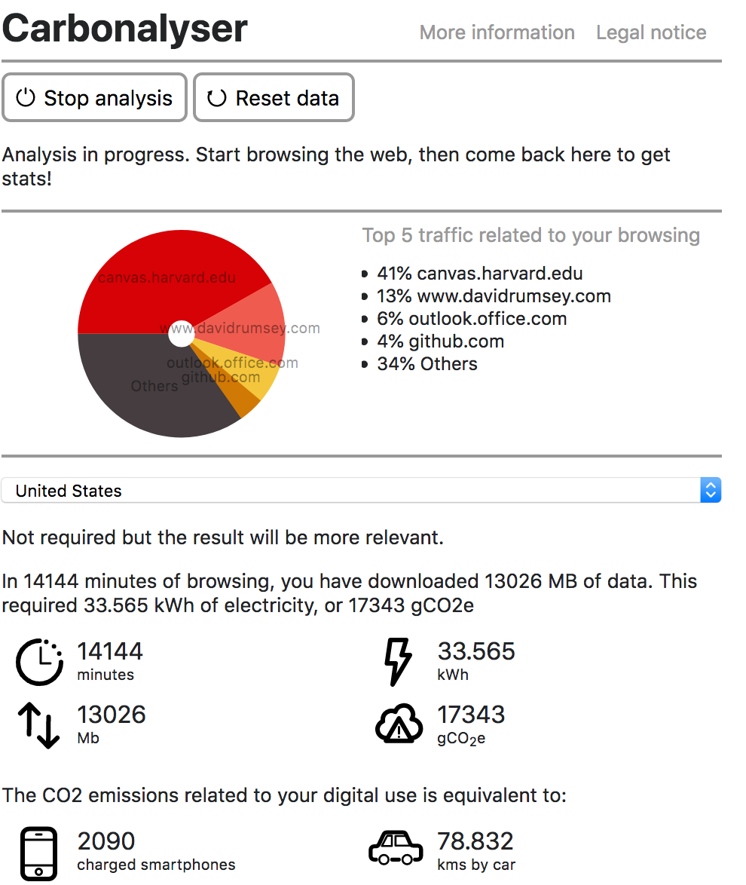

Indian Indigo, From Household Production to Capitalsit Enterprise: A Global History
'The World on Mercator's Projection' was drawn by aclaimed British geographer James Wyld. Published in 1837, it was drawn during the British East India Company's control of
India. As such, it speaks to an era of commerically motivated exploration and exploitation.
My story map.
Environmental Footprint

Analysis of my carbonalyser will go here.
Sources
Indian Indigo
- Slide 1
- Slide 2
Licensing
Make sure to put a license on your website! Here's a guide on how to choose a license. Remember that some of the image licenses will have a "share alike" requirement, which will limit your choice for licensing your own work when sharing theirs.